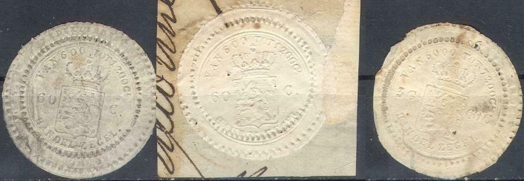
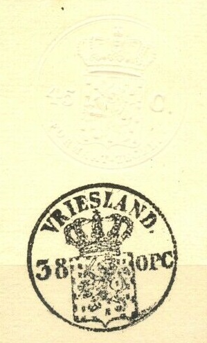
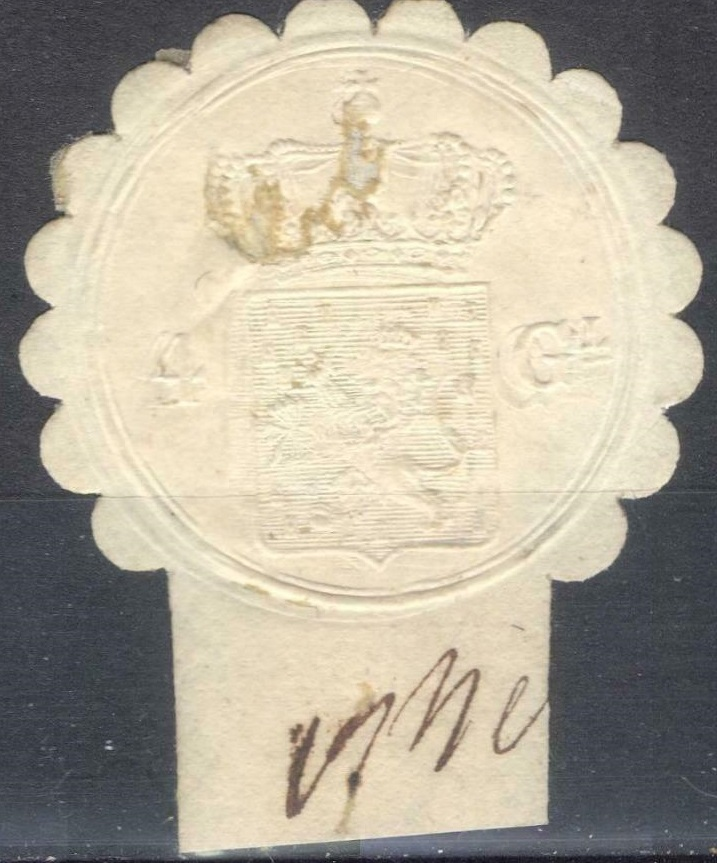
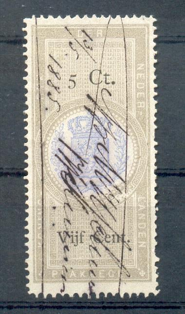
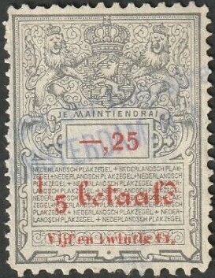
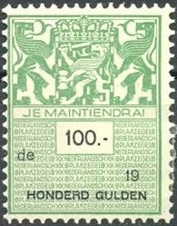
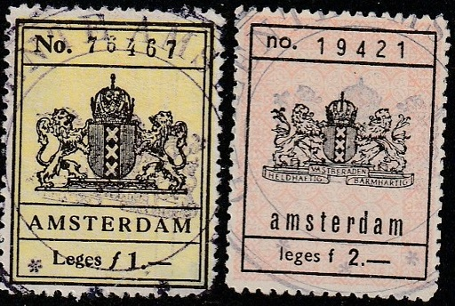

Return To Catalogue - Netherlands
Note: on my website many of the
pictures can not be seen! They are of course present in the
catalogue;
contact me if you want to purchase it.

31 values were issued, ranging from 15 c to 15 G.

1 G 25 c
38 values were issued ranging from 15 c to 20 G.

Embossed revenue label, here 4 G.
53 values were issued ranging from 15 c to 20 G.
 
Inscription "PLAKZEGEL". First three stamps with value
in numbers on top and bottom. The next two stamps with the value
written in text at the bottom. Finally a perforated stamp from
1885.
The above "PLAKZEGEL" design first
appeared in 1870 with value in numbers (in black) on top and
bottom with no perforation. The following values exist: 15 c, 25
c, 50 c, 75 c, 1 G, 1.25 G, 1.50 G, 1.75 G, 2 G, 2.25 G, 2.50 G,
2.75 G, 3 G, 3.25 G, 3.50 G, 3.75 G, 4 G, 4.25 G, 4.50 G, 4.75 G,
5 G (sofar all in grey and blue), 5.50 G, 6 G, 6.50 G, 7 G, 7.50
G, 8 G, 8.50 G, 9 G, 9.50 G, 10 G, 10.50 G, 11 G, 11.50 G, 12 G,
12.50 G, 13 G, 13.50 G, 14 G, 14.50 G, 15 G, 15.50 G, 16 G, 16.50
G, 17 G, 17.50 G, 18 G, 18.50 G, 19 G, 19.50 G and 20 G (all
these values in colour grey and red).
In 1875 it re-appeared with the value in numbers on top and the
value written in letters at the bottom (still imperforate). In
this modified design the following values exist: 5 c, 10 c, 15 c,
20 c, 25 c, 50 c, 75 c, 1 G, 1.25 G, 1.50 G, 1.75 G, 2 G, 2.25 G,
2.50 G, 2.75 G, 3 G, 3.25 G, 3.50 G, 3.75 G, 4 G, 4.25 G, 4.50 G,
4.75 G, 5 G (all in grey and blue), 5.50 G, 6 G, 6.50 G, 7 G,
7.50 G, 8 G, 8.50 G, 9 G, 9.50 G, 10 G, 10.50 G, 11 G, 11.50 G,
12 G, 12.50 G, 13 G, 13.50 G, 14 G, 14.50 G, 15 G, 15.50 G, 16 G,
16.50 G, 17 G, 17.50 G, 18 G, 18.50 G, 19 G, 19.50 G and 20 G
(all these values in colour grey and red).
The higher values are quite rare.
Finally a perforarated set appared in 1885: 5 c, 10 c, 15 c, 20
c, 25 c, 50 c, 75 c, 1 G, 1.25 G, 1.50 G, 2 G, 2.50 G, 5 G, 7 G,
7.50 G, 12 G and 12.50 G.

Overprinted "Suriname" for use in Surinam and
"NEDERL.INDIE." for use in Netherlands Indies.

5 c Fiscal stamp used in 1886, inscription "JE MAINTIENDRAI
NEDERLANDSCH PLAKZEGEL" left "18" and right
"19". Also a red "Tien Cent" (10 c) overprint
issued in 1919?


Inscription "JE MAINTIENDRAI NEDERLANDSCH PLAKZEGEL",
with "18" (left) or "19" (right)
Many values exist of these stamps, ranging from 5
c to 20 G. I have seen:
With "18": 5 c, 10 c, 15 c, 20 c, 25
c, 50 c, 75 c, 1 G, 1.25 G, 1.50 G, 1.75 G, 2 G, 2.25 G, 2.50 G,
2.75 G, 3 G, 3.25 G, 3.50 G, 3.75 G, 4 G, 4.25 G, 4.50 G, 5 G,
5.50 G, 6 G, 7.50 G, 8 G, 8.50 G, 9 G, 10 G, 12.50 G and 20 G.
The values 4.75 G, 6.50 G, 7 G, 9.50 G, 10.50 G, 11 G, 11.50 G,
12 G, 13 G, 13.50 G, 14 G, 14.50 G, 15 G, 15.50 G, 16 G, 16.50 G,
17 G, 17.50 G, 18 G, 18.50 G, 19 G and 19.50 G should also exist
according to the Forbin guide. I've seen the "18" set
still used to at least 1924 (see above 2.75 G with the
"8" manually changed to a "9")
With "19": All lower values exist with
"19", but the values 14 G and higher were not issued.
The 60 G green was issued in 1928 (probably with more higher
valued stamps?)

Here a few 100 G, 50 G, 30 G and 6 G and a 2 G of the next issue,
used in 1948.
Without "19" or "de" but with further
overprint "EN 30 OPCENTEN." on 15 c and "EN 50
OPCENTEN." on 25 c (1916?)


Similar designs for Netherlands Indies, with inscription
"PLAKZEGEL VAN NEDERLANDSCH-INDIE" or "PLAKZEGEL
VAN NED.-INDIE". Also a similar stamp for Surinam.

1886 As the previous issue, but "den" and
"18" deleted and a red "1/5 betaald" added
instead. 16 values exist ranging from 5 c to 12.50 G.

1886 As previous stamps but now with red "1/2 betaald":
16 values were issued ranging from 5 c to 12.50 G.

New type with modern arms and "JE MAINTAINDRAI". With
"den" and "19".. (issued 1931?)
In this "den" type I
have seen:
in red-brown with black text: 10 c
in yellow with black text: 20 c, 25 c, 30 c, 40 c, 50 c, 60 c, 75
c, 80 c, 90 c, 1 G
in violet with black text: 1.25 G, 1.50 G, 1.75 G, 2 G, 2.50 G, 4
G, 5 G, 5.50 G, 6 G, 7.50 G, 10 G.
in green with black text: 20 G.
10 c With inscription "NOODUITGIFTE" (emergency issue)
at the bottom. I don't know when this value was issued (somewhere
in or before 1947).


I've seen in this 1948 "de"
design:
in red-brown with black text: 10 c
in yellow with black text: 15 c, 20 c, 25 c, 30 c, 40 c, 50 c, 60
c, 70 c, 80 c, 90 c, 1 G,
in violet with black text: 1.25 G, 1.50 G, 1.75 G, 2 G, 2.25 G,
2.50 G, 2.75 G, 3 G, 3.25 G, 3.50 G, 3.75 G, 4 G, 4.25 G, 4.50 G,
4.75 G, 5 G, 5.50 G, 6.50 G, 7 G, 8 G, 8.50 G, 9 G, 9.50 G, 10 G.
in green with black text: 20 G, 25 G, 30 G, 40 G, 50 G, 60 G, 100
G.


Fiscal stamp for Netherlands New Guinea
in a similar design with inscription "PLAKZEGEL". The
arms have been replaced by "NIEUW GUINEA". Also a
fiscal stamp of Indonesia with "PLAKZEGEL" inscription.


These stamps consist of two parts, usually only the right part
ends up in collections. They exist with "de" or
"den" inscription
1917: inscription "BEURSBELASTING" on
top (with inscription "19" and "17" in the
upper flowers). Some of them have the value in letters as well,
others don't.
I have seen with "den" the values:
green with black text: 5 c, 10 c,
red with black text: 10 c, 15 c, 20 c, 25 c, 50 c, 75 c, 1 G,
yellow with black text: 15 c, 20 c, 25 c, 40 c, 50 c, 60 c, 70 c,
75 c, 80 c, 90 c, 1 G,
blue with black text: 1.25 G, 1.50 G, 1.75 G, 2 G, 2.25 G, 2.50
G, 2.75 G, 3 G, 3.25 G, 3.50 G, 3.75 G, 4 G, 4.25 G, 4.50 G, 4.75
G, 5 G,
violet with black text: 1.25 G, 1.50 G, 1.75 G, 2 G, 2.25 G, 2.50
G, 2.75 G, 3 G, 3.25 G, 3.50 G, 3.75 G, 4 G, 4.25 G, 4.50 G, 4.75
G, 5 G, 10 G
light brown with black text: 7 G, 8 G, 9 G, 10 G,
green with black text: 25 G.
Overprinted "Tien Cent" (red) and bars on 5 c green and
black.
and with "de" inscription the values
(1954?):
yellow with black text: 60 c
violet with black text: 1.50 G, 2 G, 2.50 G, 3 G, 3.50 G, 4 G
green with black text: 60 G, 500 G.

20 c blue with overprint "WAARBORG - FONDS" (insurance
fund). I've also seen the 30 c blue with this overprint.

Similar kind of design, consisting of two equal parts, but now
with "HYPOTHEEKZEGEL" (mortgage stamp) on each part,
issued in 1929. Here 1.50 G blue I've also seen the value 3 G
blue.

"STATISTIEK RECHT"
Consular stamp, inscription "NEDERLAND CONSULAIRE DIENST":
I've also seen 1 G violet and 2.50 G blue.

Similar design, but inscriptionn "BUITENLANDSE ZAKEN"
(foreign affairs)
"BEVRACHTINGSZEGEL" (freight tax), with ships in the center:

Orange label with lion and crown in the center, inscription ''sGr
* 1921' at the bottom, 'sGr stands for 's Gravenhage, the dutch
name for the Hague.

Labels as these, with no country name, but only "geldig
'date' t/m 'date'" were introduced on fish permits
(Sportvisakte or Viskaart) in the 1970's, they often have images
of fishes or related subjects.
Municipal fiscal stamps often have the word "LEGES" in it, example:

Here for "GEMEENTE 'S-HERTOGENBOSCH"

{kind=link}
{kind=link}
{kind=link}